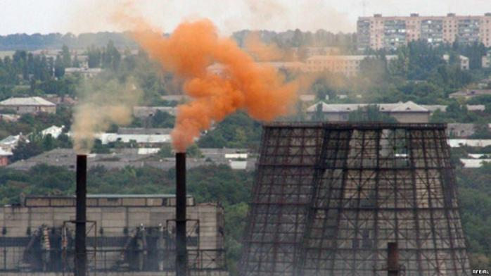

Загрязнение атмосферы Земли — принесение в атмосферный воздух новых, нехарактерных для него физических, химических и биологических веществ или изменение их естественной концентрации.
Источники загрязнения Основными источниками загрязнения атмосферы являются: Природные (естественные загрязнители минерального, растительного или микробиологического происхождения, к которым относят извержения вулканов, лесные и степные пожары, пыль, пыльцу растений, выделения животных и др.) Искусственные (антропогенные), которые можно разделить на несколько групп: Транспортные — загрязнители, образующиеся при работе автомобильного, железнодорожного, воздушного, морского и речного транспорта; Производственные — загрязнители, образующиеся как выбросы при технологических процессах, отоплении; Бытовые — загрязнители, обусловленные сжиганием топлива в жилище и переработкой бытовых отходов. По составу антропогенные источники загрязнения атмосферы также можно разделить на несколько групп: Механические загрязнители — пыль цементных заводов, пыль от сгорания угля в котельных, топках и печах, сажа от сгорания нефти и мазута, стирающиеся автопокрышки и т. д.; Химические загрязнители — пылевидные или газообразные вещества, способные вступать в химические реакции; Радиоактивные загрязнители.
Ниже мы можем увидеть сайт на котором есть загрязненые точки.